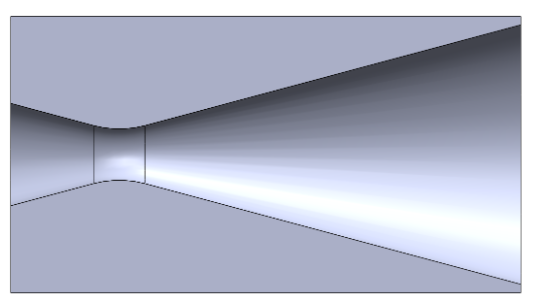
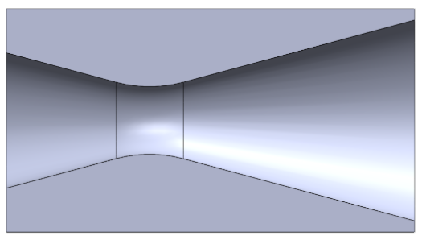
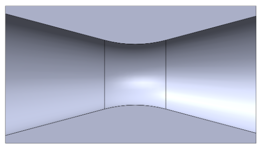
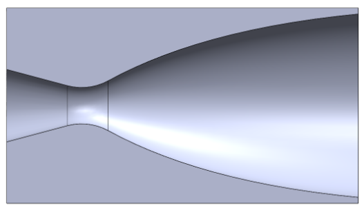
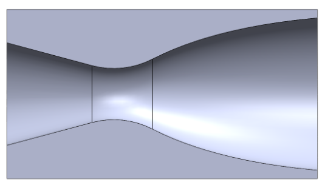
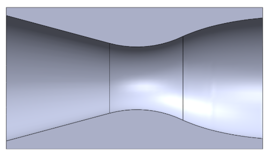
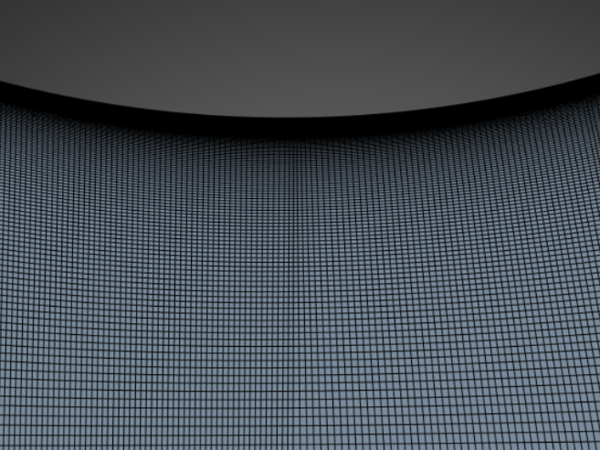
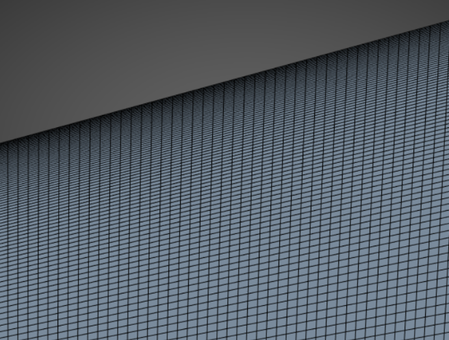
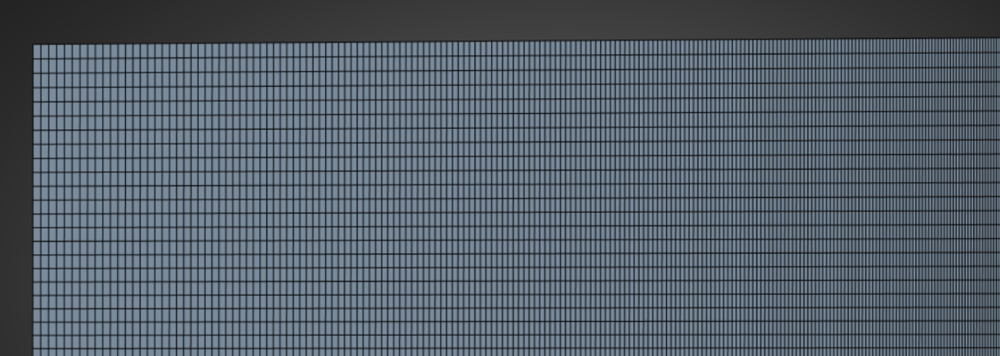
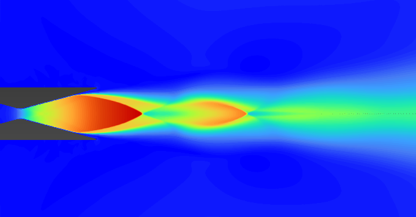

CFD NOZZLE FLOW OPTIMIZATION
This project analyzed compressible nozzle flow through a set of conical and bell (Rao) geometries as a self‑led effort to demonstrate my CFD abilities and build deeper experience with ANSYS tools. I designed six nozzle geometries, each sized for ideal expansion at one of three ambient pressures, and then tested all of them across every operating condition to study how contour shape, expansion ratio, and shock behavior influenced overall performance. The workflow used ANSYS SpaceClaim for geometry creation, ANSYS Meshing for mesh generation, and ANSYS Fluent for the simulations.
For each nozzle and ambient condition, I documented solver settings, boundary conditions, and the chosen turbulence model, then extracted Mach number contours, pressure and temperature fields, shock structure visualization, mass flow rate, exit conditions, and thrust. Fluent output was processed in MATLAB, where automated scripts generated contour plots, comparison tables, and performance curves. This enabled structured comparisons between expansion ratios and between conical and bell contours under identical operating conditions.
By varying ambient pressure and nozzle shape, the study shows how geometry affects shock location, exit pressure, mass flow rate, and thrust. The CFD results are validated against isentropic theory using the area–Mach relation, choked mass flow, and ideal exit conditions, followed by a comparison of computed thrust to ideal predictions and a discussion of viscous losses, shock‑induced separation, and other non‑ideal effects. The project serves as a focused study in compressible flow, numerical modeling, and practical nozzle design.
The final goal is to produce three optimized nozzle geometries, each refined after reviewing CFD results and accounting for boundary layer growth, flow separation, shock placement, over‑ and under‑expansion, pressure recovery, and loss mechanisms. These optimizations targeted improved thrust, efficiency, and overall flow quality for each ambient condition. The project is currently ongoing, and the full technical report— including background, methodology, geometry definitions, mesh independence, CFD setup, results, validation, comparative analysis, and conclusions—will be uploaded to this page once completed.









